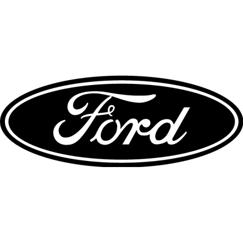

1.Toyota: Toyota sigue siendo líder en ventas globales, destacando por su fiabilidad y una amplia gama de vehículos que incluyen desde compactos hasta camionetas. Su apuesta por los híbridos y eléctricos, como el Prius y el nuevo bZ4X, refuerza su compromiso con la sostenibilidad. Además, la innovación en tecnologías de seguridad y eficiencia en combustible hacen que Toyota sea una opción atractiva en todo el mundo
2.Volkswagen: Volkswagen mantiene su posición alta gracias a su fuerte presencia en mercados europeos y su diversificación en modelos eléctricos como el ID.4 y el ID.3. La marca también ha impulsado su tecnología en vehículos convencionales, mejorando la eficiencia y la experiencia de conducción. Volkswagen continúa expandiéndose en el mercado de vehículos eléctricos, con planes de lanzar varios modelos nuevos en los próximos años
.png)
3.Hyundai: Hyundai ha subido en el ranking con modelos populares como el Tucson y el Kona. Su enfoque en la innovación y tecnología, especialmente en el ámbito de los vehículos eléctricos e híbridos, ha sido clave para su éxito. Hyundai también se ha centrado en mejorar la calidad y la experiencia del cliente, lo que ha aumentado su popularidad global
4.Ford: Conocido por sus camionetas y SUVs, como la serie F y el Explorer, Ford sigue siendo un jugador clave en el mercado estadounidense y global. La empresa está invirtiendo significativamente en electrificación, con modelos como el Mustang Mach-E y la F-150 Lightning, ampliando así su oferta en vehículos eléctricos
5.Honda: Honda destaca por su confiabilidad y eficiencia en combustible, con modelos icónicos como el Civic y el CR-V. La marca también está invirtiendo en tecnología híbrida y eléctrica, como se ve en el Honda Clarity y el futuro Honda Prologue. Honda sigue siendo una elección popular por su durabilidad y valor a largo plazo
6.Nissan: Nissan ofrece una variedad de vehículos asequibles y tecnológicos, aunque enfrenta desafíos en algunas regiones. Modelos como el Rogue y el Altima son populares, y su vehículo eléctrico Leaf sigue siendo una opción sólida en el mercado de coches eléctricos. Nissan también está desarrollando nuevas tecnologías, como su sistema de asistencia al conductor ProPILOT
7.Chevrolet: Parte de General Motors, Chevrolet sigue siendo fuerte en América del Norte con una amplia gama de vehículos que incluyen desde compactos hasta camionetas grandes. Modelos como el Silverado y el Equinox son muy populares. Chevrolet también está invirtiendo en el futuro con vehículos eléctricos como el Bolt EV y el próximo Silverado EV
8.Kia: Kia ha ganado popularidad gracias a sus diseños modernos y tecnología avanzada a precios competitivos. Modelos como el Seltos y el Telluride han recibido excelentes críticas. Kia también está expandiendo su línea de vehículos eléctricos, con el EV6 siendo un destacado en su categoría
9.Mercedes-Benz: Conocido por sus vehículos de lujo y tecnología de vanguardia, Mercedes-Benz mantiene una sólida base de clientes. La marca está a la vanguardia en la implementación de tecnología avanzada en sus vehículos, desde sistemas de asistencia al conductor hasta infotainment. Modelos como el S-Class y el GLE son ejemplos de su enfoque en el lujo y la innovación
10.BMW: Similar a Mercedes-Benz, BMW sigue atrayendo a clientes con su enfoque en la experiencia de conducción y lujo. Modelos como el 3 Series y el X5 son muy populares. BMW también está avanzando en el campo de los vehículos eléctricos con su línea i, incluyendo el i4 y el iX, demostrando su compromiso con la sostenibilidad sin comprometer el rendimiento